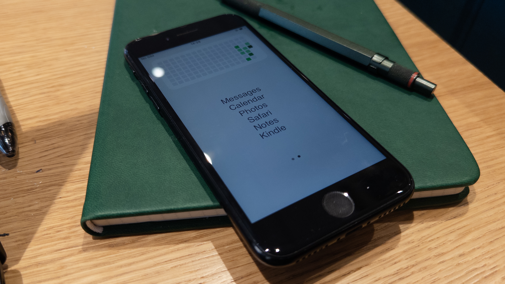

main thoughts
spent the last few days using iphone se as my daily driver and wanted to share my thoughts on it.
reading
my favourite part of dailying this phone for me is reading, the smaller form factor from my main phone (15pro) has been really nice for reading. ive been using the kindle app to read on it for now since i already had some books on it but might look for alternatives in the future
ive also been really enjoying having a dedicated reading device, i have tried to read more through my 15 pro but always have distractions so i made sure the se wouldnt have any distracting apps on it to improve my focus on the books i was reading.
the current book im reading on it as of 17/06/2026 is east of eden.
productivity
for productivity not having a phone that is addictive is really important to me, especially with new phones having 120hz refresh rate making every action smoother making us want to use them more as theres less friction. with the se i have 60hz refresh and a much smaller screen 4.7" display compared to my 15pro at 6.4" oled display.
i am also less inclined to play games or watch youtube on the smaller screen which has helped me cut down on screentime overall.

having a minimalist homescreen has helped with this also, i am using the app "blank" to make my home screen only have essentials on it. for a free app it works really well and can be highly customised on ios. i think switching to this phone has definitely helped me stop spending so much time on my phone.
Back to blog